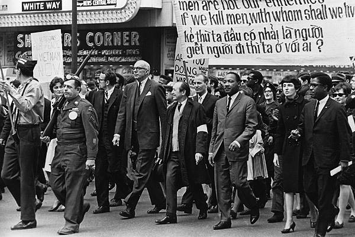

.jpg)
Two movements converge
The anti war movement grew out of the broader 1960s activism particularly during the Civil Rights Movement because young Americans were questioning the violence and inequality the Vietnam War created(DiCanio, Antiwar Movement).
This demonstrates that the struggle with racial inequality and civil rights was shown within drafts meaning that the draft became one of the issues that Civil Rights movements focused on. This shows revolution because the larger Civil Rights movement allowed the antiwar movement to gain more widespread attention. Additionally, it exposed one of the major flaws with the draft system with racial inequality and how the Civil Rights movement helped bring this to light which would change the conscription system to eliminate these biases.
.jpg)

Ali and the limits of conscience
Most objectors were white but most famous was Muhammad Ali who was “‘a significant example of the legal machinations, religious and racial prejudice, and Selective Service bumbling that sincere conscientious objectors had to endure.’”(Vietnam War Draft Evaders & Deserters: An Official Count)
High profile figures like Muhammad Ali argued that although they were fighting for democracy and freedom in Vietnam, it wasn’t being upheld in America due to the racial biases. The quote proved that a lot more people were needed in this movement because of the legal difficulties created by the government in winning this case. The political instability is also demonstrated when Ali is described as enduring unjust legal troubles from the government, showing that many other people needed to step up like the Civil Rights movements to fight for their rights. As many more communities started to step up, political leaders had to choose to reform otherwise they would risk uprisings and immense loss of support, due to the combined strength of these movements.
.jpg)
Why this coalition mattered
The opposition had both numerical strength and visibility due to student activism. Civil Rights coalition provided it with legitimacy. Together they turned the draft into a political nightmare for the authorities. By the end of the 1960s, opposition to the draft gained support from civil rights organizations as well as from Vietnam war veterans. The reform introduced in 1973 which showed an end of mandatory military service in the USA wasn't a decision made by the American government either. It was a result of an effort of the government to satisfy the requirements of a movement that it couldn't afford to neglect any longer.
In this connection, civil rights coalition explains why the draft came to an end, as well as how exactly it ended. Apart from the fact that voluntary recruitment seemed to be marginally better than drafting, it became a necessity because moral and racial inequalities that became evident due to antiwar movements could not remain within the bounds of conscription anymore. Thus, the end of the draft era can be viewed as a heritage of both coalitions mentioned above.